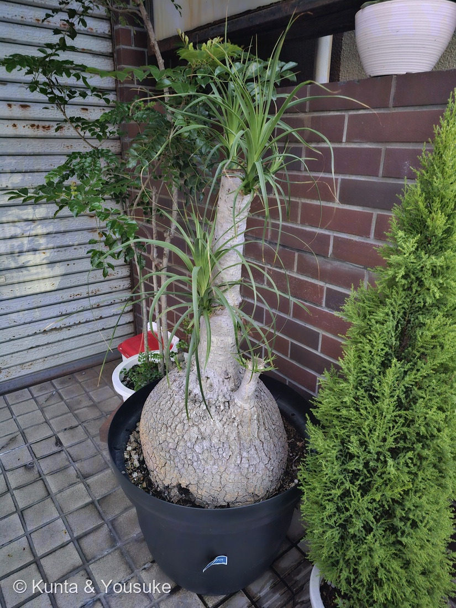

地図を読み込んでいるよ…
🔍 写真も地図も、押しているあいだ拡大して見られるよ（スマホは指を置いてすこし待ってね）。
🌍 の地図＝この子がもともと自生している場所を緑に。メキシコ東部の半乾燥地。
⭐メキシコ（東部）が原産——トックリランはメキシコ東部の半乾燥地の植物だよ。⚠日本は塗っていない——観賞用に育てられている外来の観葉植物で、日本はふるさとじゃない（お店の前の鉢で立派に育っていた）。⭐乾いた土地の出身だから、ふくらんだ基部に水をためて、暑さ・乾燥に強いんだ。
⚠ 地図は国（日本と中国だけ県・省）までしか塗れないから、ほんとうの分布より広く見えていることがあるよ。地図はだいたいの場所。正確なところは、上の文を見てね。
トックリラン（徳利蘭）
Beaucarnea recurvata (Lem.) Lem.
別名 · ポニーテールパーム／エレファントフット（象の足）／ノリナ／ 原産 · メキシコ／ 見どころ · ⭐徳利形の貯水基部・噴水状の葉・ランでもヤシでもない
キジカクシ科 · Asparagaceae（リュウゼツラン亜科・トックリラン属 Beaucarnea）── 008 アスパラガス・075 アマドコロと同じキジカクシ科・キジカクシ目
名前と学名の由来 ── 徳利みたいな幹、でもランでもヤシでもない
- ⭐和名トックリラン（徳利蘭）＝ふくらんだ基部が「徳利（とっくり＝お酒の瓶）」に似ていて、細い葉が「蘭（ラン）」っぽいことから。⚠でも、ラン科ではないんだ。
- 英名ポニーテールパーム＝葉が馬の尻尾（ポニーテール）みたい／エレファントフット（象の足）＝ふくらんだ基部が象の足みたい。⚠でも、ヤシ（パーム）でもない。
- 学名 Beaucarnea（ボーカルネア）＝ベルギーの園芸家 Beaucarne への献名。recurvata（レクルバタ）＝ラテン語で「後ろに反り返った」＝あの反り垂れる葉の姿から。旧属名は Nolina（ノリナ）。
- 008 アスパラガス・037 アスパラガス・スプレンゲリー・075 アマドコロと同じキジカクシ科の単子葉植物だよ。
この植物のこと
- メキシコ東部の半乾燥地が原産の単子葉植物。とても丈夫で、乾燥に強い人気の観葉植物。
- ⭐⭐ふくらんだ基部（caudex）＝水と養分を貯める“タンク”。乾季を生き抜くための貯水の工夫——燻太さんの「貯水用に肥大しているのかな？」は、大当たりだよ。だから、水やりは控えめでOK（やりすぎは根ぐされのもと）。
- ⭐細い葉が、株のてっぺんから噴水のように垂れる（反り返る＝recurvata）。葉のふちは、さわるとザラっとする（細かい鋸歯）。
- ⭐成長がとてもゆっくりで、長寿（うまく育てば何十年も）。あの太い基部は、長い時間をかけて、少しずつふくらんだものなんだ。
同定について
- 徳利形にふくらんだ基部＋てっぺんから噴水状に垂れる、細い単子葉の葉——これで、トックリラン（Beaucarnea recurvata）で確定。
- 似た子との見分け：ユッカ（青年の木）・ドラセナ（幸福の木）も同じキジカクシ科リュウゼツラン亜科の“幹立ち観葉”だけど、基部が徳利形に大きくふくらむのはトックリランが分かりやすい目印だよ。
⭐ 名前と正体が、ずれている
この子は、名前が二重にまぎらわしい：「トックリラン」なのにラン科じゃない、「ポニーテールパーム」なのにヤシ科じゃない。名前は、ぜんぶ見た目のたとえで、ほんとうの分類はキジカクシ目（アスパラガスやアマドコロの仲間）なんだ。
⭐そしておまけは、逆パターンの「トックリヤシ」——こちらは本物のヤシ（ヤシ科）なのに、幹の下が徳利形にふくらむ。「にせトックリ（ラン）」と「本物のトックリ（ヤシ）」、ふたつ並べると面白いよ。
133 アジサイの otaksa や 136 トウモロコシ（唐＋モロコシ）と同じ、「名前と正体（原産地）がずれている」仲間だね。
参考：Wikipedia「トックリラン」（キジカクシ科（リュウゼツラン亜科）Beaucarnea recurvata・メキシコ原産／肥大した基部に貯水／ポニーテールパーム・象の足／ラン科でもヤシ科でもない）